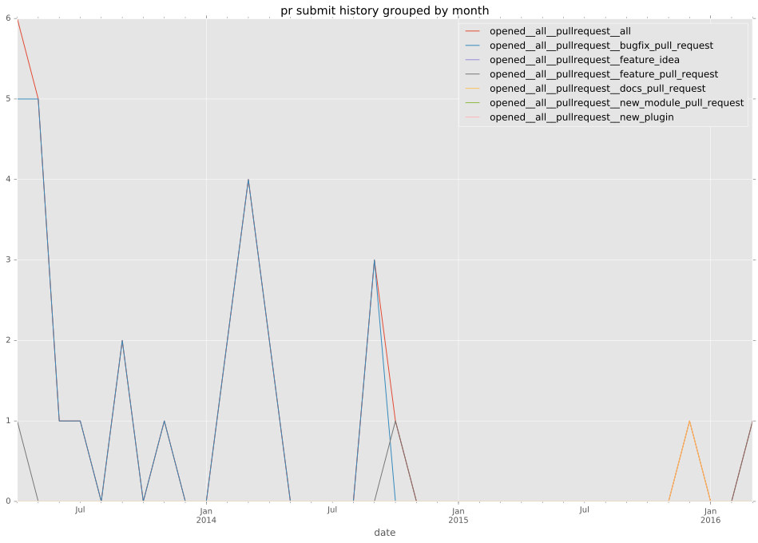
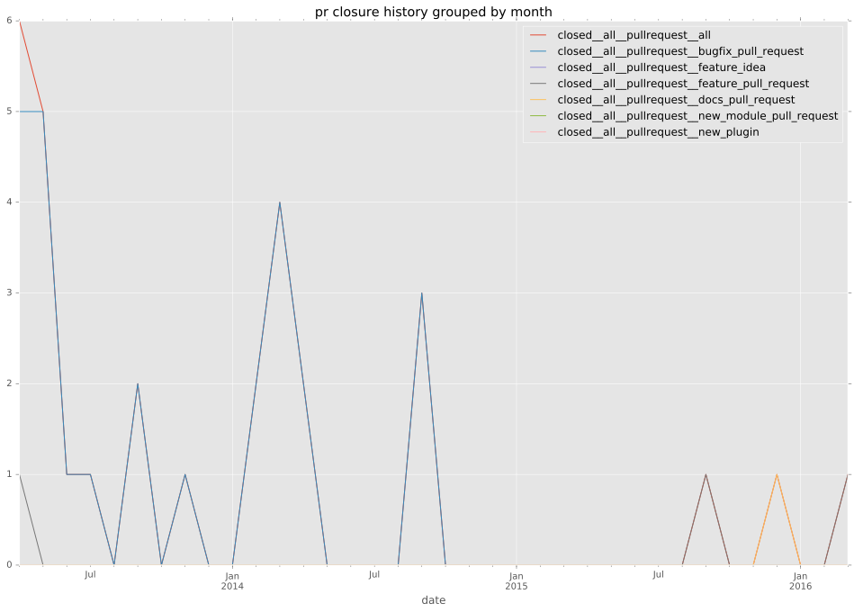

authors
- jsmartin
- drewkerrigan
maintainers
- jsmartin
- drewkerrigan
contributors
- mpdehaan : 5 commits
- abadger : 3 commits
- mscherer : 1 commits
- sivel : 1 commits
- jpmens : 1 commits
- jctanner : 2 commits
- gregdek : 1 commits
- jimi-c : 4 commits
total issue counts
bugfix pull request: 27
feature pull request: 2
pullrequest: 29
issue: 2
bug report: 2
issue history
pullrequest history


days open by issue type
feature pull request
count: 3
std: 198.031142332
min: 0
max: 343
median: 0.0
mean: 114.333333333
all
count: 44
std: 51.6299239649
min: 0
max: 343
median: 0.0
mean: 8.45454545455
pullrequest
count: 0
std: nan
min: nan
max: nan
median: nan
mean: nan
bugfix pull request
count: 39
std: 1.23106440455
min: 0
max: 5
median: 0.0
mean: 0.564102564103
issue
count: 0
std: nan
min: nan
max: nan
median: nan
mean: nan
bug report
count: 2
std: 4.94974746831
min: 0
max: 7
median: 3.5
mean: 3.5
closures grouped by total days open